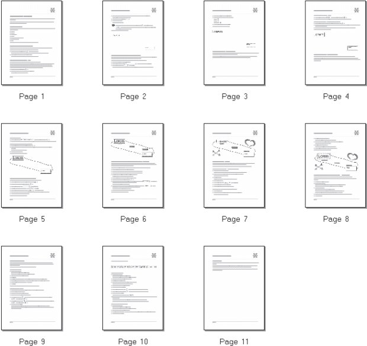

Лекция 3: Первое знакомство.Интерфейс программы
Окно программы
Почти всех начинающих пользователей первый взгляд на CorelDRAW приводит в уныние.
Некоторые даже отказываются от изучения этого графического пакета из-за большого количества пунктов меню, палитр, панелей и других элементов интерфейса.
Как это все запомнить?
Далеко не все элементы CorelDRAW являются уникальными: многие нужные задачи можно выполнить несколькими способами.
Авторы курса не уверены, что это правильно, но разработчики Corel решили сделать именно так, и нам остается изучать то, что получилось.
Через некоторое время вы запомните, какие именно возможности дублируются,и не будете путаться в них.
Одним из достоинств CorelDRAW является гибкий и легко настраиваемый интерфейс пользователя.
Вы можете настроить рабочее пространство так, как вам нравится (об этом читайте в "Настройка программы" ).
Например, поклонники Adobe Illustrator могут максимально приблизить интерфейс CorelDRAW к интерфейсу векторного редактора Adobe.
Есть даже такие пользователи, которые настраивают программу "под Word".
О вкусах, как говорится, не спорят.
Мы будем опираться на настройку интерфейса CorelDRAW по умолчанию.
Если вы заметите, что вид окна у вас на экране отличается от вида окна, показанного в курсе, обратитесь к "Установка программы" , чтобы установить нужный вид рабочего пространства.
Окно программы даже в его обычном виде насыщено служебными элементами (рис. 3.1).
Перечислим эти элементы.
В главном меню собраны все используемые в CorelDRAW команды. Во многом они дублируют команды, которые можно встретить в любой Windows-программе. Авторы уверены, что команды вроде Open (Открыть) или Paste (Вставить) хорошо известны всем читателям и никого не должны смущать. Поэтому, возможно, работа с главным меню для начинающих пользователей — это оптимальный вариант.
СОВЕТ.Практически все команды, содержащиеся в главном меню, можно вызывать при помощи сочетаний клавиш. Авторы рекомендуют осваивать именно этот способ работы с программой, так как он сэкономит вам массу сил и времени.
Рис. 3.1. Общий вид окна программы
На стандартной панели содержатся кнопки для выполнения основных операций редактирования. Эти кнопки дублируют команды меню, как, например, в программах Microsoft Office. При помощи стандартной панели обычно работают те пользователи, которые привыкли работать таким образом в Word и Excel. Авторы, как уже писалось выше, рекомендуют пользоваться сочетаниями клавиш.
Контекстно-зависимая панель свойств, вид которой зависит от того, какой объект выделен и какой инструмент активен.
Панель инструментов — пожалуй, самый главный и незаменимый элемент интерфейса CorelDRAW. Она содержит инструменты — средства создания и редактирования объектов при помощи мыши.
В строке состояния отображается информация о текущих операциях. Начинающие пользователи напрасно не обращают на нее внимания — кроме информации о выделенном объекте, в строке состояния появляются достаточно полезные подсказки о том, что можно сделать.
Цветовая палитра — набор цветов для окрашивания объектов. В CorelDRAW есть еще несколько способов окрашивать выделенные объекты, поэтому многие убирают цветовую палитру с экрана. Авторы не рекомендуют этого делать — для начинающего пользователя именно цветовая палитра является наиболее быстрым и простым способом выбрать нужный цвет.
Окно открытого документа — здесь происходит основная работа.
При необходимости можно вызвать на экран дополнительные элементы интерфейса.
Для этого достаточно щелкнуть правой кнопкой мыши на одной из перечисленных областей окна и в появившемся контекстном меню (рис. 3.2) выбрать нужную команду.
Рис. 3.2. Контекстное меню для вызова дополнительных элементов интерфейса
Кроме уже упомянутых главного меню (пункт Menu Bar на рис. 3.2), строки состояния ( Status Bar ), стандартной панели ( Standard ), панели свойств ( Property Bar ) и панели инструментов ( Toolbox ) можно активизировать дополнительные панели.
Text (Текст) — атрибуты текста;
Zoom (Масштаб) — изменение масштаба просмотра;
Internet (Интернет) — свойства специальных объектов "Подготовка web-графики" ;
Print Merge (Объединенная печать) — печать изменяемых данных;
Transform (Преобразование) — перемещение, растяжение, сжатие, поворот и перекос объектов;
Visual Basic for Applications — работа с макросами Visual Basic.
Мы не будем рассматривать дополнительные панели инструментов.
Некоторые из них большинству пользователей никогда не понадобятся (например, панель работы с макросами Visual Basic или панель объединенной печати).
Некоторые являются, по мнению авторов, избыточными (например, кнопки панелей масштабирования и атрибутов текста автоматически появляются на панели свойств при выборе, соответственно, инструментов просмотра или работы с текстом).
Рассмотрим подробнее функции основных элементов интерфейса.
Главное меню
В главном меню собраны все команды программы (рис. 3.3).
Рис. 3.3. Главное меню программы
File (Файл) — работа с документами: создание, открытие, сохранение, экспорт-импорт изображений, печать и т. д.
Edit (Правка) — общее редактирование и поиск, а также работа с некоторыми специальными типами объектов.
View (Вид) — управление режимами просмотра и отображением вспомогательных объектов.
Layout (Макет) — настройка параметров, добавление и удаление страниц документа.
Arrange (Расположение) — изменение взаимного расположения и комбинирование объектов.
Effects (Эффекты) — управление цветом и векторные эффекты, которые можно применять к объектам.
Bitmaps (Точечная графика) — редактирование растровых изображений.
Text (Текст) — работа с текстовыми объектами.
Tools (Сервис) — настройка программы и вызов пристыковываемых окон (см.ниже).
Window (Окно) — управление окнами документов и вызов пристыковываемых окон.
Help (Помощь) — система помощи и полезные ссылки.
Стандартная панель
Кнопки, отображаемые на стандартной панели (рис. 3.4), соответствуют наиболее популярным командам главного меню.
Рис. 3.4. Стандартная панель
Панель инструментов
Инструменты, расположенные на этой панели, будут подробно рассмотрены в соответствующих лекциях курса, поэтому здесь мы просто перечислим функции групп инструментов (рис. 3.5).
Рис. 3.5. Панель инструментов
Строка состояния
В строке состояния отображается текущая информация, характер которой зависит от того, какой объект выделен и какой инструмент активен.
Например, если при активном инструменте Pick (Выбор) выделен прямоугольник,то строка состояния выглядит так, как показано на рис. 3.6.
Рис. 3.6. Строка состояния при выделенном объекте
В левом верхнем углу указано количество узлов кривой (Number of Nodes 4), в центре сверху — тип объекта и название слоя, на котором он расположен (Curve on Layer 1). В правой части строки состояния указан цвет заливки (Green) и обводки(Blue), а также толщина обводки (Hairline — минимально возможная). В левом нижнем углу отображаются текущие координаты указателя мыши. В центре снизу находится подсказка для активного инструмента. В данном случае она гласит:
Click an object twice for rotating/skewing — двойной щелчок на объекте переведет его в режим вращения-перекоса;
Dbl-clicking tool selects all objects — двойной щелчок на инструменте на панели инструментов выделит все объекты;
Shift+click multi-selects — щелчок при нажатой клавише Shift позволяет удалять объекты из выделения или добавлять к нему новые;
Alt+click digs — щелчок при нажатой клавише Alt позволяет выделить объект,находящийся на заднем плане;
Ctrl+click selects in a group — при нажатой клавише Ctrl можно выделять объекты в группе, не разгруппировывая их.
Пристыковываемые окна
Пристыковываемые окна (Dockers) используются для выполнения широкого круга операций: от перемещения объектов и расположения их по слоям до показа коллекций web-ссылок.
Рис. 3.7. Пристыковываемое окно Transformation (Преобразование) расположено в правой части окна документа
По умолчанию пристыковываемые окна открываются в правой части окна документа (рис. 3.7). Чтобы сэкономить место на экране, можно преобразовать пристыковываемое окно в "плавающее", перетащив его за заголовок на свободное место (рис. 3.8). Дважды щелкните на заголовке пристыковываемого окна, чтобы вернуть его в правую часть окна документа.
Рис. 3.8. Пристыковываемое окно Transformation (Преобразование) в "плавающем" режиме
Как правило, у каждого пристыковываемого окна есть несколько вкладок (например, у окна Transformation (Преобразования), изображенном на рис. 3.8, их пять).Для перехода на вкладку нужно щелкнуть на соответствующем значке в верхней части пристыковываемого окна.
В CorelDRAW 12 есть следующие пристыковываемые окна:
Properties (Свойства) — своеобразный "паспорт" объекта, в котором можно увидеть и изменить все его свойства;
Object Manager (Диспетчер объектов) — распределение объектов по слоям и планам;
Object Data (Данные об объекте) — графическая база данных;
View Manager (Диспетчер просмотра) — набор инструментов для изменения масштаба просмотра;
Link Manager (Диспетчер связей) — управление связями с изображениями, помещенными в документ;
Undo (Откат операций) — отмена и возврат последних выполненных операций;
Bookmark Manager (Диспетчер ссылок) — работа с закладками;
Symbol Manager (Диспетчер символов) — работа с символами;
Artistic Media (Художественные средства) — настройка графических эффектов, примененных к обводке;
Blend (Перетекание) — управление параметрами пошагового перехода между объектами (перетекания);
Contour (Ореол) — управление параметрами эффекта Contour (Ореол);
Extrude (Экструзия) — управление параметрами эффекта Extrude (Экструзия);
Envelope (Оболочка) — управление параметрами эффекта Envelope (Оболочка);
Lens (Линза) — управление параметрами эффекта Lens (Линза) ;
Bitmap Color Mask (Цветовая маска) — управление прозрачностью участков растрового изображения;
Transformation (Преобразование) — общее трансформирование объектов (перемещение, поворот и т. д.);
Shaping (Изменение формы) — изменение формы перекрывающихся объектов;
Color (Цвет) — управление цветом обводки и заливки объекта;
Color Palette Browser (Браузер цветовых палитр) — добавление и удаление используемых цветовых палитр;
Color Styles (Цветовые стили) — использование цветовых стилей;
Graphic and Text Styles (Графические и текстовые стили) — использование графических и текстовых стилей;
Scrapbook (Альбом) — набор готовых изображений;
Web Connector (Подключение к Сети) — коллекция полезных ссылок в Интернете.
Наиболее важные пристыковываемые окна мы рассмотрим при описании операций, с которыми они работают.
Контекстное меню
Контекстное меню вызывается щелчком правой кнопки мыши. Его состав зависит от того, где произведен щелчок. Команды контекстного меню повторяют команды главного меню программы, поэтому мы не будем их подробно описывать, а просто рассмотрим наиболее распространенные варианты контекстного меню.
Меню настройки интерфейса (см. рис. 3.2), которое появляется при щелчке на стандартной панели, любой панели инструментов или главном меню.
Базовое меню (рис. 3.9), появляющееся при щелчке в окне документа не на объекте.
Меню редактирования объекта(рис. 3.10), вызываемое щелчком на объекте.
Меню редактирования текста(рис. 3.11), которое появляется при щелчке на текстовом объекте.
Рис. 3.9. Базовое контекстное меню
Рис. 3.10. Контекстное меню редактирования объекта
Рис. 3.11. Контекстное меню редактирования текста
Цветовая палитра
Цветовая палитра располагается по умолчанию в правой части окна документа.Она используется для окрашивания выделенного объекта: при щелчке левой кнопкой мыши на образце цвета изменяется цвет заливки выделенного объекта, при щелчке правой кнопкой — цвет его обводки.
ВНИМАНИЕ.Если вы щелкнете на образце цвета при отсутствии выделения, программа воспримет это как попытку изменить стиль окраски объектов по умолчанию и выдаст соответствующий запрос.
При щелчке на кнопкев заголовке палитры появляется меню (рис. 3.12), позволяющее использовать и редактировать палитру.
Рис. 3.12. Меню работы с цветовыми палитрами
Рассмотрим команды этого меню:
Set Outline Color (Задать цвет обводки) — присваивает обводке выделенного объекта цвет выделенного на палитре образца;
Set Fill Color (Задать цвет заливки) — присваивает заливке выделенного объекта цвет выбранного на палитре образца;
Palette (Палитра) — вызывает подменю, позволяющее создать новую, открыть существующую, сохранить или закрыть текущую палитру;
СОВЕТ.Вы можете открыть одновременно несколько цветовых палитр, которые будут отображаться рядом.
Edit (Правка) — позволяет изменить или найти цвет;
Set As Default (Установить по умолчанию) — назначает данную палитру палитрой по умолчанию;
Show Color Names (Показать имена цветов) — показываются не только образцы цвета, но и их имена; это возможно только когда цветовая палитра находится в "плавающем" режиме (рис. 3.13);
Рис. 3.13. Цветовая палитра при активизации пункта меню Show Color Names (Показать имена цветов)
Scroll to Start (Перейти к началу) — отображает начальные цвета палитры;
Scroll to End (Перейти к окончанию) — отображает завершающие цвета палитры;
Customize (Настройка) — позволяет изменить некоторые дополнительные параметры отображения цветовых палитр.
Особое значение при работе с цветовыми палитрами имеет редактор палитры (рис. 3.14), вызываемый командой Edit \Rightarrow Palette Editor (Правка \Rightarrow Редактор палитры) из меню палитры цветов.
Рис. 3.14. Редактор палитры
Название палитры, которую вы в данный момент редактируете, отображается в верхней части окна редактора палитры, ниже показан состав палитры.
Любой цвет можно выделить и изменить, щелкнув на кнопке Edit Color (Изменить цвет), либо удалить, выбрав Delete Color (Удалить цвет).
При щелчке на кнопке Add Color (Добавить цвет) вызывается окно редактирования цвета, который будет добавлен на текущую палитру. При щелчке на кнопке Sort Colors (Сортировать цвета) появится список способов сортировки.
СОВЕТ.С цветовыми палитрами удобнее всего работать, используя пристыковываемое окно Color Palette Browser (Браузер цветовых палитр) (рис. 3.15), которое вызывается командой Window \Rightarrow Color Palettes \Rightarrow Color Palette Browser (Окно \Rightarrow Цветовые палитры \Rightarrow Браузер цветовых палитр).
Рис. 3.15. Браузер цветовых палитр
Навигация в документе. Режимы просмотра
В CorelDRAW можно перемещаться по окну документа, увеличивать и уменьшать масштаб просмотра, а также прокручивать экран. Используя команды главного меню, можно изменять способ отображения объектов и работать со специальными вспомогательными объектами (например, направляющими), которые не выводятся на печать, но помогают при рисовании и выравнивании фигур.
Группа инструментов Zoom (Масштаб)
Эта группа содержит два инструмента, которые позволяют изменять параметры просмотра изображения на экране.
Zoom (Масштаб)
Однократный щелчок левой кнопкой мыши при выбранном инструменте Zoom (Масштаб) увеличивает масштаб в два раза.
При нажатой клавише Shift или щелчке правой кнопкой мыши происходит уменьшение масштаба.
Чтобы увеличить какую-либо область окна документа на весь экран, достаточно обвести ее инструментом Zoom (Масштаб) при нажатой левой кнопке мыши.
Панель свойств предлагает дополнительные возможности изменения масштаба просмотра.
Zoom Levels (Масштаб просмотра).
Zoom In (Крупнее) — увеличение масштаба вдвое.
Zoom Out (Мельче) — уменьшение масштаба вдвое.
Zoom To Selected (Масштаб по выделенному) — масштабирование экрана происходит так, чтобы максимально крупно помещались выделенные объекты.
Zoom To All Objects (Масштаб по всем объектам).
Zoom To Page (Страница целиком).
Zoom To Page Width (Масштаб по ширине страницы).
Zoom To Page Height (Масштаб по высоте страницы).
Hand (Прокрутка)
Позволяет перемещать область просмотра в окне документа — такую же функцию выполняют полосы прокрутки внизу и справа от окна.
Меню View (Вид)
В этом пункте главного меню программы (рис. 3.16) собраны команды управления режимами просмотра и отображения вспомогательных объектов — то есть объектов, не отображаемых при печати и не сохраняющихся при экспорте документа, но помогающих при редактировании.
Рис. 3.16. Меню View (Вид)
Первые пять команд меню View (Вид) предназначены для выбора режима отображения объектов на экране:
Simple Wireframe (Простой каркасный) — наиболее упрощенный режим просмотра, в котором растровые изображения становятся черно-белыми и полупрозрачными, игнорируются атрибуты заливки и обводки, а также эффекты (ореол, перетекание, экструзия и др.);
Wireframe (Каркасный) — в отличие от режима Simple Wireframe (Простой каркасный) позволяет увидеть примененные эффекты;
Draft (Черновой) — полноцветный режим просмотра в низком качестве;
Normal (Нормальный) — режим просмотра среднего качества, при котором не отображаются Postscript-заливки (см. "Цвет и окрашивание объектов" );
Enhanced (Улучшенный) — максимально качественный режим просмотра
Переключение между двумя последними использованными режимами производится сочетанием клавиш Shift+F9.
СОВЕТ.Чем проще режим просмотра, тем быстрее происходит прорисовка экрана. Если вы не занимаетесь цветокоррекцией, вам вполне должно хватить режима Normal (Нормальный) или даже Draft (Черновой). Каркасные режимы неудобны тем, что все объекты становятся прозрачными, из-за чего в местах пересечения большого количества линий получается "каша" (рис. 3.17).
Рис. 3.17. Десять пересекающихся девятилучевых звезд: а — в режиме Normal (Нормальный),б — в режиме Wireframe (Каркасный)
Full-Screen Preview (Полноэкранный просмотр)
Эта команда позволяет увидеть редактируемый документ на полном экране — без строки меню, панелей и пристыковываемых окон. Изображение в этом режиме соответствует результату распечатки на принтере (с той точностью, которая определяется настройками цветокоррекции монитора).
Preview Selected Only (Просмотр только выделенного)
Показывает в режиме полноэкранного просмотра только выделенные объекты.
Page Sorter View (Раскладка страниц)
Режим просмотра, полезный при работе с многостраничными документами. Он позволяет отобразить все страницы документа на одном экране (рис. 3.18). Содержимое страниц показывается в виде миниатюр.
Рис. 3.18. Многостраничный документ в режиме Page Sorter View (Раскладка страниц)
Rulers (Линейки)
Этой командой начинается раздел меню View (Вид), в который входят команды,при помощи которых можно отобразить вспомогательные элементы окна документа CorelDRAW.
Линейки расположены по верхней и левой сторонам окна документа. Они позволяют визуально контролировать координаты и размеры объектов, а также текущие координаты указателя мыши.
По умолчанию начало координат находится в левом нижнем углу документа. При необходимости можно перенести начало координат в любое другое место.
Для этого щелкните на значке, который находится на пересечении линеек, и, не отпуская кнопку мыши, перетащите его в нужную точку.
Чтобы вернуть начало координат в левый нижний угол листа, дважды щелкните на этом же значке.
Линейки можно настроить в диалоговом окне Options (Параметры) "Настройка программы" .
О пунктах Grid (Сетка) и Guidelines (Направляющие) подробно рассказано в "Расположение объектов в документе" .
Show (Показать)
В этом подменю (рис. 3.19) собраны команды, позволяющие показать или спрятать дополнительные вспомогательные линии.
Рис. 3.19. Подменю Show (Показать)
Рассмотрим команды данного подменю:
Page Border (Граница страницы) — сплошной линией отображается граница страницы документа;
Bleed (Обрез) — штриховой линией отображаются границы листа до обреза,определяемые на странице Document/Page/Size (Документ/Страница/Размер) диалогового окна Options (Параметры);
Printable Area (Печатная область) — штриховой линией отображаются границы печатной области, определяемые настройками принтера;
Overprinted Objects (Объекты с наложением) — объекты, в которых обводка или заливка печатаются с наложением, (см. "Подготовка к печати и печать" ), заливаются "шахматным" узором (рис. 3.20);
Рис. 3.20. Результат включения режима Overprinted Objects (Объекты с наложением): а — объект с наложением заливки; б — объект с наложением обводки; в — объект с наложением заливки и обводки
Text Frames (Текстовые рамки) — отображаются границы абзацных текстовых объектов, даже если эти объекты не выделены.
Enable Rollovers (Отображать интерактивные кнопки)
Интерактивные кнопки — это кнопки, внешний вид которых зависит от положения указателя и нажатия на кнопку мыши. Они широко используются в web-документах. В CorelDRAW интерактивные кнопки можно создавать и редактировать с помощью команд подменю Effects \Rightarrow Rollover (Эффекты \Rightarrow Динамическая кнопка)(см. "Подготовка web-графики" ). Если установлен флажок Enable Rollovers (Отображать интерактивные кнопки), интерактивная кнопка в окне CorelDRAW будет реагировать на перемещения и щелчки мышью.
Флажки Snap To Grid (Привязка к сетке), Snap To Guidelines(Привязка к направляющим) и Snap To Objects (Привязка к объектам)
Установка какого-либо из этих флажков приводит к тому, что объект при перемещении по окну документа "прилипает", соответственно, к линиям сетки, к направляющим или к узлам других объектов.
Dynamic Guides (Динамические направляющие)
Параметр появился в CorelDRAW 12. Если выбрать данную команду, то при рисовании вы будете видеть информацию — угол поворота линии и т. д. Особенно это полезно для тех, кто создает при помощи CorelDRAW простые чертежи.
Команды Grid and Ruler Setup (Настройка сетки и линеек),Guidelines Setup (Настройка направляющих), Snap To Objects Setup (Настройка привязки к объектам) и Dynamic Guides Setup (Настройка динамических направляющих)
С помощью этих команд вызываются соответствующие страницы диалогового окна Options (Параметры). Подробнее о настройках программы будет рассказано в "Настройка программы" .
Система помощи
В основе системы помощи CorelDRAW лежит стандартная для Windows-программ технология, хотя некоторые ее разделы достаточно специфичны. Все справочные команды собраны в меню Help (Справка) (рис. 3.21).
Рис. 3.21. Меню Help (Справка)
Help Topics (Разделы справки)
Вызывается стандартная программа справочной системы CorelDRAW (рис. 3.22).На вкладке со значком открытой книги вы можете произвести поиск по темам, на вкладке со значком ключа — по алфавитному предметному указателю, на вкладке со значком бинокля — задать поиск по ключевому слову.
Рис. 3.22. Справочная система CorelDRAW
CorelTUTOR
Эта команда вызывает стандартные уроки, входящие в поставку CorelDRAW.Каждый урок представляет собой небольшой документ в формате PDF.
Technical Support (Техническая поддержка)
Открывает HTML-страницу с кратким описанием технической поддержки, предоставляемой корпорацией Corel, а также ссылкой на сайт технической поддержки.
Working with Office (Работа с Office)
Раздел справочной системы, содержащий подробную информацию о возможностях CorelDRAW 12 при совместной работе с пакетом Microsoft Office.
Corel on the Web (Corel в Web)
В подменю этой команды содержится список сайтов, на которых можно найти актуальную информацию о программе и ее использовании.
About CorelDRAW (О CorelDRAW)
Открывает окно с информацией о версии программы, лицензионном соглашении,серийном номере и т. д.
Наибольший интерес представляет кнопка System Info (Информация о системе),при щелчке на которой открывается специальное окно. В нем можно найти сведения о вашем компьютере, мониторе, подключенных принтерах, операционной системе, а также о программных модулях CorelDRAW.